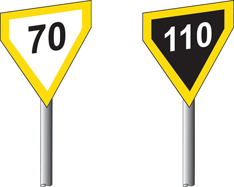
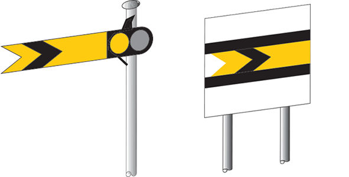
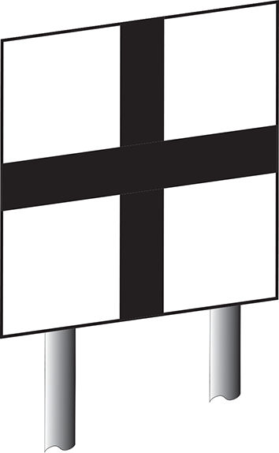
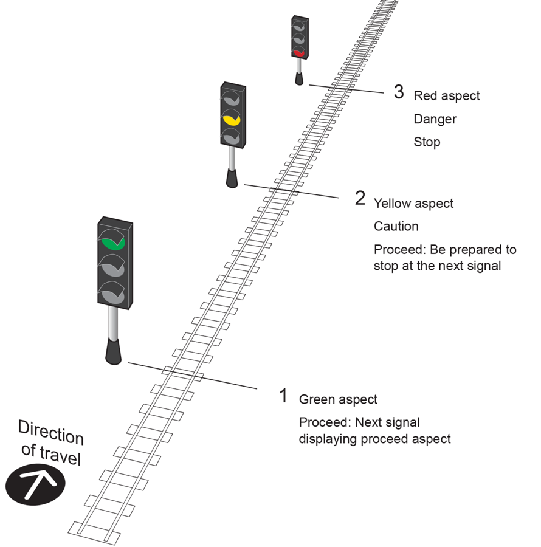
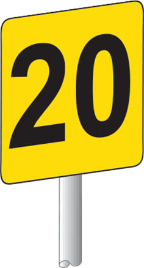
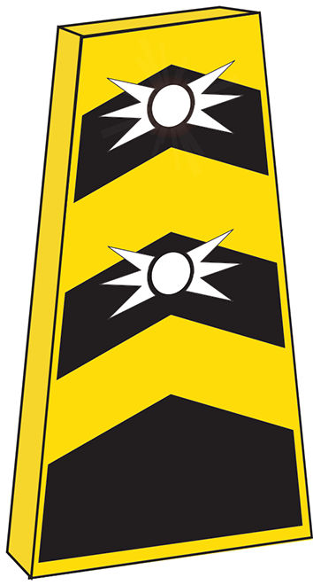

The signals, indicators and boards that trigger an AWS warning — real images from the rule book
RS522 §1.4.1 lists what gives the driver an AWS warning indication. Here's what each of those actually looks like on the ground, pulled directly from RS521 (Signals, Handsignals, Indicators and Signs) and RS522.

Provided on the approach to certain permissible speed indicators, warning of a reduction in permissible speed ahead. Black text on white = mph; white text on black = km/h. An AWS magnet is provided on the approach.
RS521 §7.2 — Warning Indicators
Yellow arm with a fish-tail notch and black chevron. Shown here at Caution — arm horizontal by day, yellow light or a reflectorised board indication by night. AWS gives a warning indication when a semaphore distant is at caution.
RS521 §3.1 — Distant Signals
Marks the approach to an automatic barrier crossing locally monitored (ABCL), automatic open crossing locally monitored (AOCL), or an open crossing. AWS gives a warning indication on the approach to this board.
RS521 §6.1 — Level Crossing Signs
Full three-aspect sequence: green (proceed, next signal shows proceed), yellow (caution, be prepared to stop at the next signal), red (danger, stop). AWS gives a warning indication for a single or double yellow, or a red aspect.
RS521 §2.1 — Three-Aspect Signalling
Shows the start of the restriction and the permitted speed over it. A separate, plain warning board (unnumbered, with white discs only) is placed further back on the approach — RS521 doesn't illustrate that board separately from this one, so this is the closest real image available.
RS521 §8.1 — Temporary Speed Restriction Signs
Used when an emergency speed restriction is imposed. Has flashing white lights working at all times, positioned ahead of any other TSR warning signs. An AWS magnet is provided on the approach.
RS521 §8.2 — Emergency IndicatorA caution indication painted on a board rather than a moving arm — always treated as AT CAUTION. Can be placed before a buffer stop or on the approach to a terminal area.